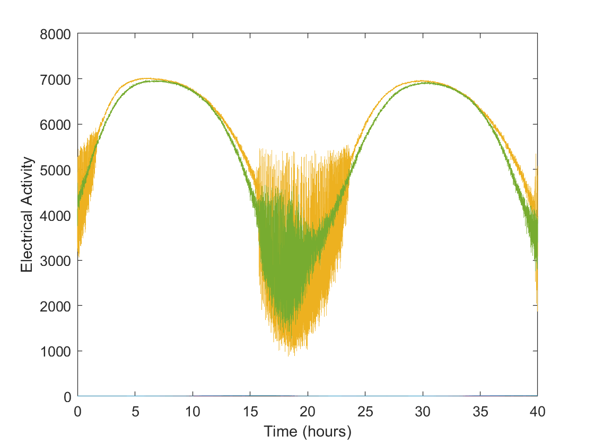
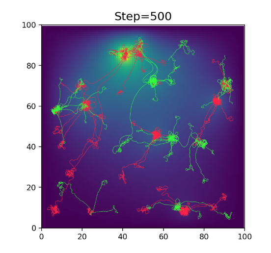

Contact us: contact@knc.ai
We are a research group interested in the intersection between Neuroscience, learning theory, and AI.
We have weekly readings, occasional talks, and several ongoing projects. If you are interested in joining our reading group, giving a talk, or working with us on a project, join our slack channel and/or check out our github.

